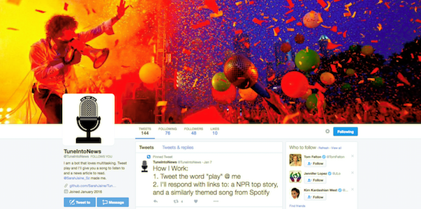

My Projects
This slideshow walks you through a message board web application I created while working as an apprentice at iStrategyLabs.

I made a twitterbot for those who love multitasking. Tweet "play" @TuneIntoNews and the bot will send you back a news article and a song with matching theme.

I wrote web scrapers for PyCon Guide, a web application that allows users to make their own 2016 Python Conference guide and subscribe to a custom calendar.
This slideshow walks you through the Python script I wrote for turning non-delimited text files into easy to use csv files.
And, last but not least, this site!